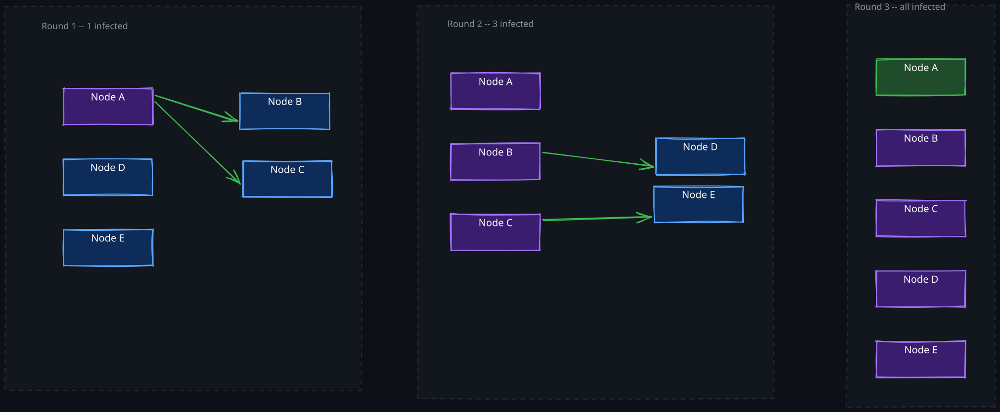
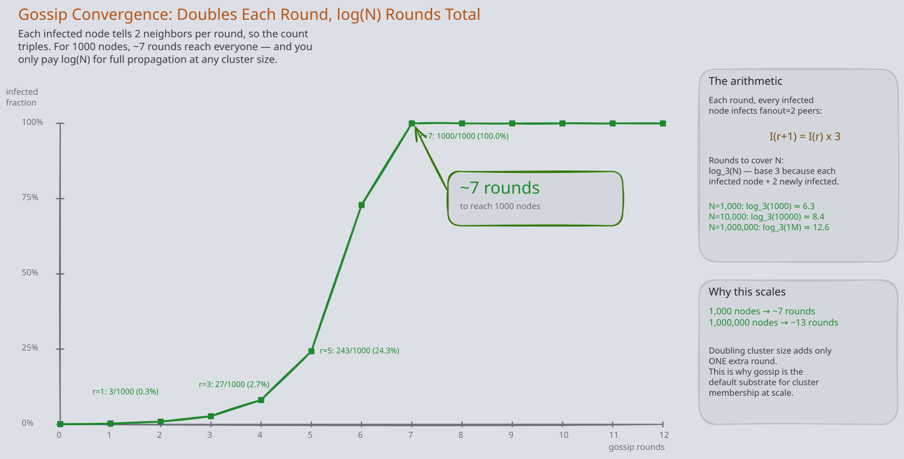
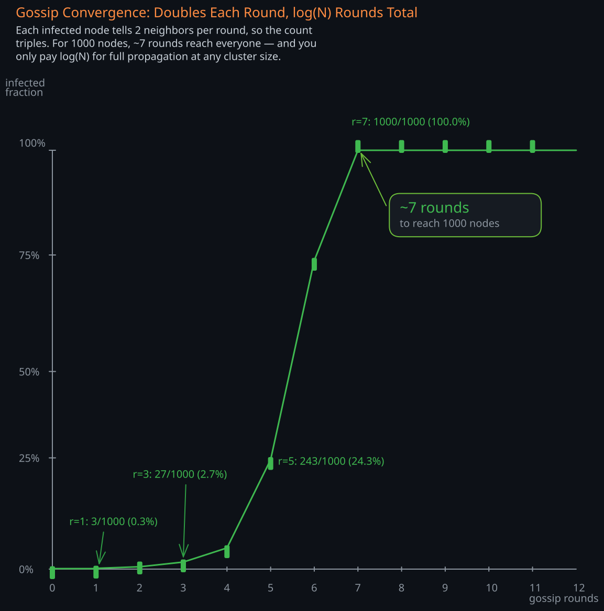
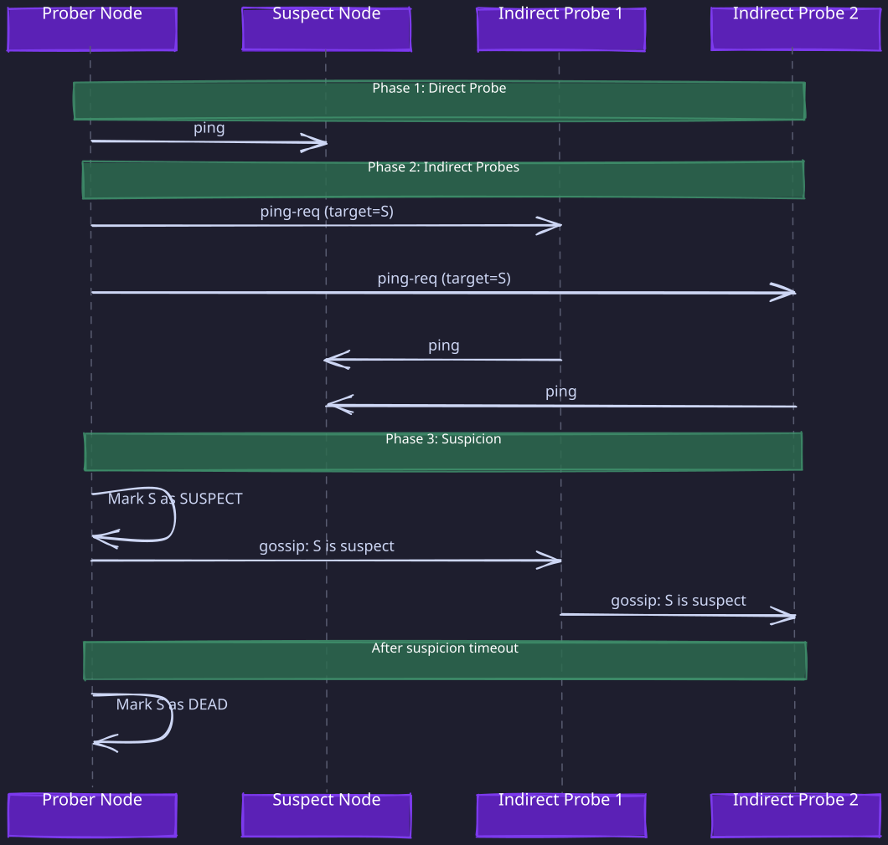

Related Topics: 03-Consensus-Algorithm, 04-Cassandra, 02-CAP-and-PACELC, 02-Consistent-Hashing, 03-DynamoDB, 01-01-Redis, 02-Zookeeper
The Story
The reason gossip protocols work is the same reason pandemics are unstoppable after a threshold: exponential propagation. In a 10,000-node cluster, gossip reaches every node in roughly 13 rounds (log base 2 of 10,000). Adding another 10,000 nodes only adds one more round. The original 1987 paper by Demers et al. at Xerox PARC studied this by directly borrowing epidemic convergence models from public health. Epidemiologists knew COVID-19 would become a global pandemic early on partly because of this same math — and it’s the same math that guarantees your Cassandra cluster will converge.
1. The Problem: How Do Nodes Learn About Each Other?
Every distributed system faces a fundamental coordination problem: nodes need shared knowledge about the cluster. Which nodes are alive? What data does each node own? What is the current configuration? Without answers to these questions, the system cannot route requests, replicate data, or recover from failures.
There are three naive approaches to solving this, and each breaks in a different way at scale.
Centralized registry. A single server maintains the truth. Every node reports to it, and every node queries it. This works for small clusters, but the registry becomes a single point of failure and a throughput bottleneck. If it dies, every node in the cluster is blind. Systems like 02-Zookeeper and etcd use this model, but they mitigate the bottleneck by limiting what they coordinate — they handle metadata and leader election, not high-throughput data operations. Even so, they require a consensus protocol internally, which limits their cluster size to a handful of nodes.
Full broadcast. Every node sends every update to every other node. This guarantees fast propagation, but the message count is O(N^2) per update. In a 1,000-node cluster, a single configuration change generates one million messages. Network bandwidth becomes the bottleneck long before the cluster reaches production scale.
Tree-based dissemination. Nodes form a spanning tree and propagate updates along the tree edges. This is efficient — O(N) messages per update — but fragile. If any interior node in the tree fails, an entire subtree becomes disconnected. Repairing the tree requires its own coordination protocol, reintroducing the original problem.
Gossip protocols solve this by trading consistency guarantees for robustness. Instead of structured coordination, nodes spread information the way diseases spread through populations: randomly, redundantly, and with mathematical guarantees about convergence.
2. The Epidemic Model: Why Gossip Works
The theoretical foundation of gossip comes from epidemiology. Information spreads through a cluster the same way a disease spreads through a population. This is not just a metaphor — the same mathematical models apply, and they explain why gossip is both reliable and efficient.
1. SIR Model Applied to Gossip
In epidemiology, the SIR model classifies individuals into three states:
- Susceptible (S): Has not received the information yet. Can be “infected” by contact with an informed node.
- Infected (I): Has the information and is actively spreading it. Each round, it contacts random peers and transmits the update.
- Removed (R): Has the information but has stopped spreading it. This happens after a node has gossiped the same update enough times that further spreading is unlikely to reach new nodes.
The key insight is the exponential growth phase. When an update is new, most nodes are susceptible, so almost every gossip contact results in a new infection. The number of informed nodes doubles every round. But as more nodes become infected, a gossip contact is increasingly likely to hit an already-informed node, and the spreading slows. Eventually, the protocol converges when the probability of any susceptible node remaining becomes negligible.
2. Convergence Analysis
In a cluster of N nodes with fanout f (number of peers contacted per round):
- Round 1: 1 node is infected, infects f new nodes. Total: 1 + f.
- Round 2: Each of the f + 1 infected nodes contacts f peers. Many contacts are redundant (hitting already-infected nodes), but the infected population still roughly doubles.
- Round k: Approximately min(N, f^k) nodes are infected.
The number of rounds to infect all nodes is O(log_f N). For practical values (f = 3, N = 1000), this means approximately 7 rounds — about 7 seconds with a 1-second gossip interval.
The probability that any single node remains uninformed after c * ln(N) rounds decreases exponentially with c. By choosing the fanout and the number of rounds an update stays “hot,” the protocol can make the probability of missed nodes arbitrarily small.



3. Protocol Mechanics: Push, Pull, and Push-Pull
The three gossip variants differ in who initiates the exchange and what direction data flows.
1. Push Gossip
The initiating node sends its updates to a randomly selected peer. The peer receives the data and merges it with its own state. The initiator does not learn anything from the peer.
Behavior: Fast initial spreading when few nodes have the update (most contacts hit susceptible nodes). Becomes wasteful as the update saturates the cluster — infected nodes keep pushing to other infected nodes, wasting bandwidth.
Convergence: Leaves a long tail of uninformed nodes. The last few susceptible nodes are hard to reach because random selection increasingly hits already-informed nodes. Mathematically, the fraction of uninformed nodes decreases as e^(-f * t) but never quite reaches zero without many extra rounds.
2. Pull Gossip
The initiating node asks a random peer: “What updates do you have that I don’t?” The peer responds with any missing data.
Behavior: Slow initial spreading — when only one node has the update, a pull request from a random node is unlikely to hit that specific node. But as the update spreads to more nodes, pull becomes increasingly effective because any random peer is likely to have it.
Convergence: Fast convergence in the tail. Once most nodes are informed, the remaining susceptible nodes quickly find an informed peer. The fraction of uninformed nodes decreases as e^(-e^(f*t)), a doubly exponential decay.
3. Push-Pull Gossip
Both nodes exchange their state during each contact. The initiator pushes its updates and pulls the peer’s updates in the same round-trip.
Behavior: Combines the strengths of both. Fast initial spreading (push) and fast tail convergence (pull). This is what production systems use.
Convergence: O(log N) rounds with high probability. For a 10,000-node cluster with fanout 3, full convergence in approximately 9 rounds.
| Variant | Initial Spread | Tail Convergence | Bandwidth | Production Use |
|---|---|---|---|---|
| Push | Fast | Slow (long tail) | Wasted at saturation | Rarely alone |
| Pull | Slow | Fast | Efficient | Rarely alone |
| Push-Pull | Fast | Fast | Moderate | Standard choice |
4. The Fanout Parameter
Fanout (f) is the number of peers a node contacts each round. It controls the fundamental tradeoff between convergence speed and bandwidth:
- f = 1: Minimal bandwidth, but convergence is O(N log N) rounds and unreliable. A single lost message can delay propagation significantly.
- f = 2-3: The sweet spot for most systems. Convergence in O(log N) rounds with high reliability. Redundant contacts provide natural fault tolerance.
- f > 5: Diminishing returns. Bandwidth grows linearly with f, but convergence only improves logarithmically. Only justified for critical updates that must propagate extremely fast.
The total messages per round across the cluster is N * f. For a 1,000-node cluster with f = 3, that is 3,000 messages per round — vastly better than broadcast’s 1,000,000.
4. Failure Detection: Why Heartbeats Don’t Scale
Failure detection is one of the most important applications of gossip. Every distributed system needs to know which nodes are alive, but the naive approach — direct heartbeats — breaks at scale.
1. The Heartbeat Problem
In a direct heartbeat scheme, every node sends a periodic “I’m alive” message to every other node. With N nodes, this generates N * (N - 1) messages per interval — O(N^2) bandwidth. A 1,000-node cluster with 1-second heartbeats produces nearly a million messages per second just for failure detection. This is unsustainable.
Reducing the heartbeat frequency (say, every 30 seconds) reduces bandwidth but increases detection latency. A node could be dead for 30 seconds before anyone notices. This tradeoff between bandwidth and detection speed is inherent to direct heartbeats and cannot be resolved within that model.
2. Gossip-Based Failure Detection
Instead of direct heartbeats, each node maintains a heartbeat counter that it increments periodically. During gossip exchanges, nodes share their tables of (node_id, heartbeat_counter, timestamp) entries. When a node receives a gossip message, it merges the table: for each entry, it keeps the higher heartbeat counter.
If a node’s heartbeat counter has not increased for T seconds (as observed locally), that node is suspected of failure. The key property is that failure information propagates through the same O(N * f) messages already being sent for data dissemination. No additional bandwidth is needed.
However, this basic scheme has a critical flaw: false positives. Network congestion, GC pauses, or CPU saturation can cause a healthy node’s heartbeat updates to arrive late, triggering a false failure detection. In a large cluster, false positives are not rare events — they are guaranteed to happen regularly.
3. SWIM: Scalable Weakly-consistent Infection-style Membership
The SWIM protocol (used by HashiCorp Consul via Serf, and by Memberlist) solves the false positive problem through a multi-phase probe mechanism.
Direct probe. Each round, a node picks a random target and sends a ping. If the target responds with an ack within a timeout, it is alive. Done.
Indirect probe. If the direct ping times out, the node does not immediately declare failure. Instead, it selects k random other nodes and asks them to ping the suspect on its behalf. These are indirect probes. If any of the k intermediaries receives an ack from the suspect, the suspect is alive.
This is the critical insight: if the direct probe failed because of a network path issue between the prober and the suspect (not because the suspect is actually down), the indirect probes will likely succeed via different network paths. False positives from localized network issues are eliminated.
Suspicion mechanism. If both direct and indirect probes fail, the node enters the suspect state rather than being immediately declared dead. The suspicion is disseminated via gossip. The suspect node has a configurable window (the suspicion timeout) to refute the accusation by gossiping its own aliveness. If the suspect does not refute within the timeout, it is declared dead.
This three-phase approach (direct probe, indirect probe, suspicion with refutation) dramatically reduces false positive rates while maintaining O(N) total message overhead per failure detection round.

4. Probe Target Selection
SWIM does not probe targets purely at random. It uses a round-robin schedule: each node maintains a shuffled list of all known members and probes them in order, reshuffling when the list is exhausted. This guarantees that every node is probed within a bounded period (one full cycle through the membership list), providing deterministic detection bounds rather than probabilistic ones.
The detection time for any single failure is bounded by one protocol period (the time to cycle through the full membership list), which is N * T where T is the probe interval. For a 1,000-node cluster with a 200ms probe interval, the worst-case detection time is 200 seconds. This can be improved by increasing the probe rate or reducing the protocol period.
5. Anti-Entropy and Rumor Mongering
Gossip protocols use two complementary strategies for data repair, each suited to different situations.
1. Rumor Mongering (Epidemic Dissemination)
When a node receives a new update, it treats it as a “hot rumor” and actively spreads it during gossip rounds. After a node has attempted to spread the rumor and encountered several peers who already have it (indicating saturation), it stops spreading — the rumor “cools off.” This is the Removed state in the SIR model.
Rumor mongering is efficient for propagating new updates because it naturally concentrates bandwidth on fresh information. But it has a weakness: if a node was partitioned or down when the rumor was hot, it will never receive the update through rumor mongering alone, because the rumor has already cooled by the time the node returns.
2. Anti-Entropy (Background Repair)
Anti-entropy is a background process where nodes periodically compare their full state with a random peer and repair any differences. Unlike rumor mongering, anti-entropy does not depend on timeliness — it catches any inconsistency, regardless of when it was introduced.
The challenge is efficiency. Comparing full state between two nodes is expensive if the state is large. This is where Merkle trees become essential.
3. Merkle Trees for Efficient Comparison
A Merkle tree is a hash tree where each leaf contains the hash of a data block, and each internal node contains the hash of its children. Two nodes can compare their entire datasets by exchanging only the root hash. If root hashes match, the data is identical. If they differ, the nodes recursively descend the tree, exchanging child hashes to identify exactly which data blocks differ.
For a dataset with M items, this requires O(log M) hash comparisons to identify all differences, compared to O(M) for a naive comparison. Cassandra uses Merkle trees during anti-entropy repair to efficiently synchronize replicas that have diverged.
The tradeoff is that Merkle trees must be rebuilt when data changes, which is computationally expensive. Systems typically rebuild them periodically (not on every write) and accept a window during which the tree is stale.
Production strategy: Use rumor mongering for real-time update propagation (fast, efficient for new data) and anti-entropy as a safety net to catch anything that rumor mongering missed (slow but comprehensive). Both are needed — rumor mongering alone leaves gaps, and anti-entropy alone is too slow for time-sensitive updates.
6. Membership Management
Beyond failure detection, gossip protocols manage the dynamic membership of a cluster: how nodes join, how they leave gracefully, and how the cluster handles unexpected departures.
1. Join Protocol
A new node must bootstrap into the gossip network. It cannot gossip with random peers if it does not know any peers yet. The standard solution is seed nodes — a small, well-known set of nodes (typically 3-5) that are configured into every node at startup.
The join process:
- New node contacts one or more seed nodes.
- Seed node responds with the current membership list (or a subset of it).
- New node begins gossiping with members from the received list.
- The new node’s existence propagates through the cluster via gossip.
Seed nodes are not special in terms of protocol behavior — they are regular nodes that happen to be well-known entry points. The system does not fail if a seed node goes down (as long as at least one seed is reachable for bootstrapping new nodes).
2. Graceful Leave
A node that is shutting down intentionally sends a “leave” message via gossip. This is propagated like any other update, allowing the cluster to remove the node from membership without triggering the failure detection pathway. This avoids unnecessary suspicion dissemination and potential data rebalancing that would occur if the departure were treated as a failure.
3. NAT Traversal Challenges
In cloud environments, nodes behind NATs or in different VPCs may not be directly reachable from all other nodes. This creates a problem for indirect probes in SWIM — a node asked to probe a suspect on behalf of another node may not be able to reach the suspect due to network topology, not because the suspect is down.
Solutions include:
- LAN vs WAN gossip pools: Consul separates gossip into LAN pools (within a datacenter, low latency, full connectivity) and WAN pools (across datacenters, higher latency, potentially restricted connectivity). Different parameters are tuned for each.
- Relay nodes: Nodes that have connectivity to multiple network segments relay gossip between them.
- Node addressing: Advertising the externally reachable address rather than the internal address.
7. Real-World Implementations
1. Cassandra: Ring Membership and Failure Detection
Cassandra uses gossip as the backbone of its peer-to-peer architecture. Every node gossips every second with up to three other nodes, exchanging an ApplicationState that includes:
- Token ownership: Which ranges of the consistent hash ring each node owns.
- Schema version: Ensures all nodes agree on the table definitions.
- Load information: Helps with load-balanced routing.
- Severity: A node’s self-assessed health, used for dynamic snitch routing.
- Heartbeat state: Generation number (incremented on restart) and version number (incremented every gossip round).
Cassandra’s gossip is implemented as a push-pull protocol. Every second, a node picks a random live peer, a random dead peer (with some probability, to detect recoveries), and a seed node (with some probability, to prevent network partitions between cluster segments). This triple selection strategy ensures convergence even when the cluster has partitioned views.
Failure detection uses an accrual failure detector (Phi Accrual Failure Detector) rather than a binary alive/dead determination. Instead of using a fixed timeout, it maintains a sliding window of inter-arrival times for gossip from each peer and calculates a “phi” value representing the suspicion level. The operator configures a phi threshold (default 8), and when the calculated phi exceeds the threshold, the node is marked as down. This adapts automatically to varying network conditions — a node in a distant datacenter with higher latency will naturally have a higher acceptable inter-arrival time.
2. Consul and Serf: SWIM-Based Membership
HashiCorp Consul uses Serf (a Go library implementing SWIM) for cluster membership and failure detection. Serf enhances the base SWIM protocol with several production improvements:
- Lifeguard: An extension that dynamically adjusts suspicion timeouts based on observed false positive rates. If many nodes are being falsely suspected (indicating network stress), timeouts are extended automatically.
- Compound messages: Multiple gossip payloads are batched into a single UDP packet, reducing the per-message overhead.
- Encryption: Gossip messages are encrypted with a shared symmetric key, preventing eavesdropping and spoofing.
Consul separates gossip into LAN and WAN pools with different configurations. LAN gossip runs with aggressive timeouts (fast failure detection within a datacenter) while WAN gossip uses relaxed timeouts (accounting for cross-datacenter latency).
3. DynamoDB: Consistent Hashing Metadata
03-DynamoDB uses gossip to propagate membership changes and partition mapping across its storage nodes. When a node joins or leaves, the updated consistent hash ring is disseminated via gossip. DynamoDB also uses anti-entropy with Merkle trees to detect and repair divergent replicas during read repair and background synchronization.
4. Redis Cluster: Cluster Bus
01-01-Redis Cluster uses a gossip protocol over a dedicated cluster bus (a separate TCP port, conventionally the data port + 10000). Nodes exchange PING/PONG messages carrying:
- Node ID and address
- Cluster configuration epoch (a logical clock for configuration changes)
- Slot assignments (which of the 16,384 hash slots each node serves)
- Node flags (master, replica, failing, handshake)
Redis Cluster uses a gossip protocol with a protocol period of 1 second. Each node sends a ping to a random node every second and includes information about a random subset of other nodes in the cluster. Failure detection uses a fixed timeout (cluster-node-timeout), and a node is marked as PFAIL (possible failure) locally, then promoted to FAIL (confirmed failure) when a majority of master nodes agree via gossip that the node is unreachable.
8. Performance Analysis and Tuning
1. Bandwidth Overhead
Per round, each node sends f messages. Total messages per round across the cluster: N * f.
If each gossip message carries S bytes of state:
- Per-node outbound bandwidth per round: f * S bytes
- Total cluster bandwidth per round: N * f * S bytes
- Per-second bandwidth (with T-second gossip interval): N * f * S / T bytes per second
Example: N = 5,000 nodes, f = 3, S = 500 bytes, T = 1 second:
- Per-node: 1,500 bytes/second outbound (negligible)
- Cluster total: 7.5 MB/second (manageable)
The concern is not raw bandwidth but state size. If each gossip message must carry the full membership table (N entries), message size S grows linearly with N. For 5,000 nodes at 100 bytes per entry, S = 500 KB per message. With f = 3 and T = 1 second, that is 1.5 MB/second per node and 7.5 GB/second cluster-wide. This is the scaling wall for naive gossip.
Mitigation strategies:
- Delta gossip: Only send state that has changed since the last exchange with this peer. Requires tracking per-peer state, increasing memory overhead.
- Digest-based exchange: Send only hashes/digests first. The peer responds with the actual data only for entries where the digest differs. This is what Cassandra does (SYN, ACK, ACK2 three-way handshake).
- Scuttlebutt reconciliation: A protocol where each entry has a version number. During gossip, nodes exchange (node_id, max_version) pairs first, then send only the entries where the peer’s version is behind. Named after the nautical term for shipboard gossip.
- Compression: Compress gossip payloads. Effective because membership tables are highly compressible (many similar entries).
2. Convergence Speed vs Bandwidth Tradeoff
| Parameter | Increase Effect | Decrease Effect |
|---|---|---|
| Fanout (f) | Faster convergence, more bandwidth | Slower convergence, less bandwidth |
| Gossip interval (T) | Slower convergence, less bandwidth | Faster convergence, more bandwidth |
| Message size (S) | More data per round, more bandwidth | Less data per round, risk of staleness |
The optimal configuration depends on the use case:
- Failure detection: Prioritize fast convergence. Use smaller intervals (200ms), moderate fanout (3), and small messages (only health data).
- Metadata dissemination: Moderate speed is acceptable. Use standard intervals (1s), moderate fanout (3), and delta-based messages.
- Anti-entropy repair: Background process. Use longer intervals (30-60s), low fanout (1), and Merkle-tree-based comparison.
3. False Positive Rate in Failure Detection
The false positive rate depends on:
- Network jitter: High variance in message delivery time increases false positives.
- Probe timeout: Shorter timeouts catch real failures faster but increase false positives.
- Indirect probe count (k): More indirect probes reduce false positives but increase per-probe bandwidth.
SWIM’s theoretical false positive rate decreases exponentially with k (indirect probe count). In practice, k = 3 provides a false positive rate below 0.1% for most network conditions. The Lifeguard extension in Serf further adapts the suspicion timeout based on observed false positive rates, achieving near-zero false positives under normal conditions.
9. Consistency Implications and Limitations
1. Eventual Consistency of Metadata
Gossip provides eventual consistency: given sufficient time without new updates, all nodes will converge to the same state. But during convergence, different nodes may have different views of the cluster. This has real consequences:
- Routing inconsistency: A client may be routed to a node that does not yet know it owns a particular partition, causing a temporary error or redirect.
- Stale failure information: A node may believe a peer is alive when it has actually been dead for several gossip rounds, causing requests to be sent to a dead node.
- Configuration drift: After a configuration change, some nodes operate under the old configuration while others use the new one. If the change affects data format or protocol behavior, this can cause subtle bugs.
2. Split-Brain During Partitions
When a network partition divides a cluster into two subclusters, gossip continues independently in each partition. Each subcluster eventually marks the other’s nodes as dead. When the partition heals:
- Gossip resumes between the subclusters.
- Each side discovers that the other side’s nodes are actually alive.
- Membership views merge, but there may be conflicting state (e.g., both sides promoted different replicas to primary).
Gossip itself provides no mechanism to resolve split-brain conflicts. The application layer must handle this — typically through fencing tokens, configuration epochs (as in Redis Cluster), or conflict resolution strategies like last-write-wins or vector clocks.
3. Limitations at Scale
Large cluster message amplification. With N = 50,000 nodes, even efficient gossip generates significant background traffic. At this scale, systems often use hierarchical gossip: gossip within smaller groups, with representative nodes gossiping between groups.
Slow convergence for large state. If the gossiped state is large (megabytes per node), convergence slows because each round can only transmit a fraction of the total state. Systems must use delta compression, Merkle trees, or scuttlebutt reconciliation to keep messages small.
Probabilistic guarantees. Gossip provides probabilistic, not deterministic, delivery. There is always a nonzero (though exponentially small) probability that a node misses an update. Anti-entropy provides the safety net, but there is a window during which state is inconsistent.
Monotonicity challenges. Gossip-propagated state can arrive out of order. A node might receive version 5 of a value, then later receive version 3 from a different gossip path. The merge function must be commutative and idempotent — it must produce the same result regardless of the order in which updates arrive. This is why gossip-propagated state often uses CRDTs or version vectors rather than simple overwrite semantics.
10. Gossip vs Consensus: When to Use Which
Gossip and consensus solve different problems, and understanding the boundary between them is essential.
| Dimension | Gossip | Consensus (Raft/Paxos) |
|---|---|---|
| Goal | Spread information to all nodes | Get all nodes to agree on one value |
| Consistency | Eventual | Strong (linearizable) |
| Ordering | No global order | Total order of operations |
| Message complexity | O(N * f) per round | O(N) per decision |
| Fault tolerance | Works with any number of failures | Requires majority alive |
| Latency | O(log N) rounds to propagate | O(1) round-trip for committed value |
| Use case | Metadata propagation, failure detection | Leader election, distributed transactions |
Gossip is the right choice when you need all nodes to eventually learn about something (configuration changes, membership updates, health status) and can tolerate a window of inconsistency.
Consensus is the right choice when you need nodes to agree on exactly one value (who is the leader, what is the committed transaction log) and cannot tolerate disagreement even momentarily.
Many production systems use both. Cassandra uses gossip for cluster metadata but quorum reads/writes for data consistency. Consul uses SWIM gossip for membership but Raft consensus for the service catalog. The systems are complementary, not competing.
Revision Summary
- Gossip protocols solve the cluster coordination problem by spreading information randomly and redundantly, like an epidemic. They avoid the single-point-of-failure of centralized registries, the O(N^2) bandwidth of broadcast, and the fragility of tree-based dissemination.
- The SIR epidemic model (Susceptible/Infected/Removed) explains gossip mathematically. Information spreads exponentially, reaching all N nodes in O(log N) rounds with fanout f.
- Three protocol variants exist: push (fast initial spread, slow tail), pull (slow initial, fast tail), and push-pull (best of both — the production standard).
- The fanout parameter (f) controls the convergence-vs-bandwidth tradeoff. f = 2-3 is the sweet spot for most systems.
- Direct heartbeats do not scale (O(N^2) bandwidth). SWIM solves this with direct probes, indirect probes (eliminating false positives from localized network issues), and a suspicion mechanism with refutation.
- Anti-entropy (background Merkle-tree-based repair) and rumor mongering (active epidemic spread of new updates) are complementary. Rumor mongering handles the fast path; anti-entropy catches anything it missed.
- Membership management uses seed nodes for bootstrapping, graceful leave messages, and failure detection for unexpected departures.
- Real-world implementations: Cassandra (phi accrual failure detector, three-way gossip digest), Consul/Serf (SWIM + Lifeguard), DynamoDB (consistent hashing metadata), Redis Cluster (slot assignment and failure consensus).
- Gossip provides eventual consistency only. Split-brain during partitions requires application-level resolution. State merge functions must be commutative and idempotent.
- Scaling limits: state size per message grows with cluster size. Mitigations include delta gossip, scuttlebutt reconciliation, digest-based exchange, and hierarchical gossip for very large clusters.
Deep Understanding Questions
-
Convergence under partition and heal. A 500-node cluster splits into two partitions of 300 and 200 nodes. Each partition runs gossip independently for 10 minutes. When the partition heals, how long does it take for membership views to converge? What if each partition has promoted different replicas during the split — how does gossip handle the conflicting state? Ans:
-
False positive cascading. A gossip-based failure detector marks Node X as dead due to a 3-second GC pause. Before Node X can refute the suspicion, 60% of the cluster has received the “Node X is dead” gossip. What cascading effects could this trigger (data rebalancing, leader re-election, client rerouting)? How does the SWIM suspicion mechanism mitigate this compared to a simple timeout-based detector? Ans:
-
Fanout tuning for a 50,000-node cluster. At this scale, with fanout f = 3 and a 1-second gossip interval, calculate the total cluster messages per second and the per-node bandwidth if each message is 1 KB. What would you change to make gossip viable at this scale, and what are the tradeoffs of each change? Ans:
-
State size explosion. Each node in a 10,000-node cluster gossips a full membership table (100 bytes per entry). Calculate the per-node outbound bandwidth. Now suppose the state includes 50 application-level key-value pairs per node (200 bytes each). What is the new bandwidth? At what point does this become untenable, and how would you redesign the protocol? Ans:
-
Rumor mongering vs anti-entropy timing. A node rejoins a cluster after being down for 2 hours. During that time, 500 configuration updates were propagated via rumor mongering. How does the node catch up? If anti-entropy runs every 60 seconds, how long might it take for the node to receive all 500 updates? What if the Merkle tree was stale when the node came back? Ans:
-
SWIM indirect probe failure modes. Node A pings Node B (direct probe fails). Node A asks Nodes C, D, E to indirectly probe Node B. But Nodes C, D, E are all in the same rack as Node A, and the failure is a rack-level network issue, not a Node B failure. How does SWIM handle this? What probe target selection strategy would mitigate rack-correlated failures? Ans:
-
Gossip-only leader election. An engineer proposes using gossip to elect a leader: each node gossips its candidacy with a random priority, and the node with the highest priority wins. Explain the specific failure mode that makes this unsafe. How could two nodes simultaneously believe they are the leader, and why can gossip not prevent this? Ans:
-
Phi accrual failure detector calibration. Cassandra’s phi accrual detector uses a sliding window of gossip inter-arrival times. A node in a remote datacenter has a mean inter-arrival time of 2 seconds with standard deviation of 500ms. What phi threshold would you set to achieve a false positive rate below 0.01%? What happens if network conditions suddenly worsen (mean jumps to 5 seconds)? Ans:
-
Scuttlebutt reconciliation efficiency. Two nodes exchange state using scuttlebutt. Node A has 10,000 entries, of which 50 have been updated since the last sync with Node B. Describe the message exchange and calculate the bytes transferred, compared to a full-state exchange. What happens if Node A and Node B have never synced before? Ans:
-
Monotonicity and merge function correctness. Node A receives gossip updates for key K in this order: version 5, version 3, version 7, version 4. If the merge function uses last-write-wins (highest timestamp), what is the final value? If the merge function uses last-arrival-wins (most recently received), what is the final value? Why does the merge function’s properties (commutativity, associativity, idempotency) matter for gossip correctness? Ans:
-
Hierarchical gossip design. You need to build gossip for a 100,000-node cluster spanning 5 datacenters. Design a hierarchical gossip scheme. How many gossip layers would you use? How do you handle updates that must propagate across datacenters? What failure modes are introduced by the hierarchy that flat gossip does not have? Ans:
-
Encrypted gossip and key rotation. A system uses symmetric-key encryption for gossip (like Consul). You need to rotate the encryption key without stopping gossip. Describe a protocol for zero-downtime key rotation. What happens if some nodes rotate before others? How do you handle the transition window where both old and new keys are in use? Ans: